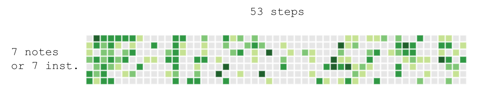

CTP431 Final Project:
git commit -m "make some noise"
Turn your Github commits into a step sequencer
Essentially, this is a data sonification of github commit history.
Each column corresponds to either
one chord with each row being a single note in the chord
or each column is a single set of instruments with each row being different instruments.

Go to project website (Chrome recommended)
Options
- Chord progression
- I-IV-V in C major
- Blues in A (A7, D7, E7)
- Instruments
- piano
- flue
- xylophone
- TR808
- Themes
- Commit patterns: just in case your github commits sound terrible
Libraries, samples used
Code (gitcommit.html, assets/project4/final.js)
github